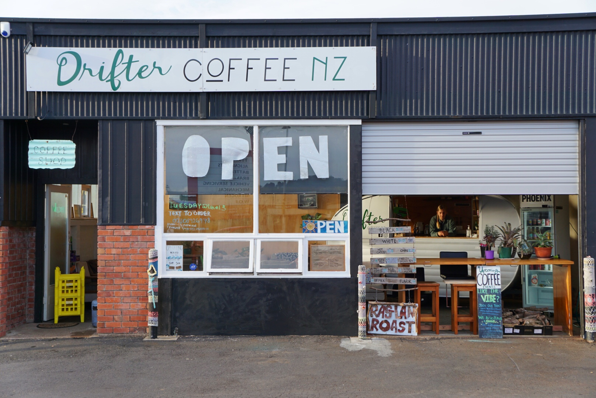
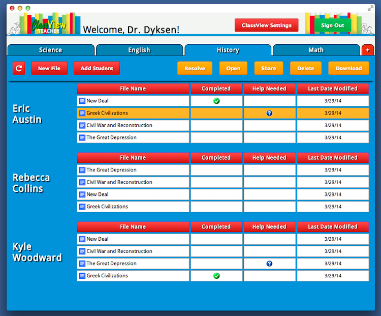
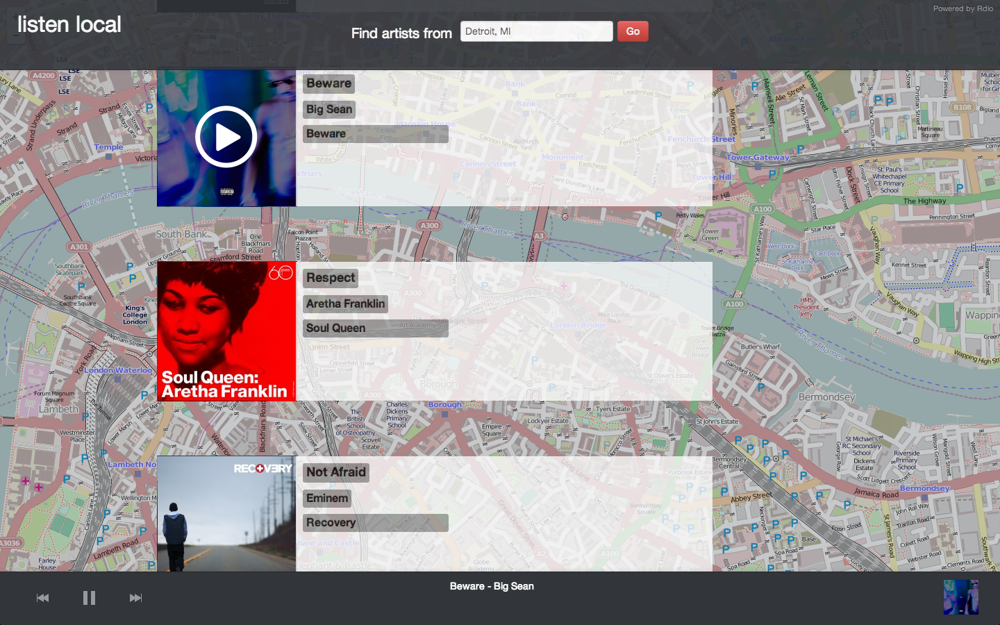
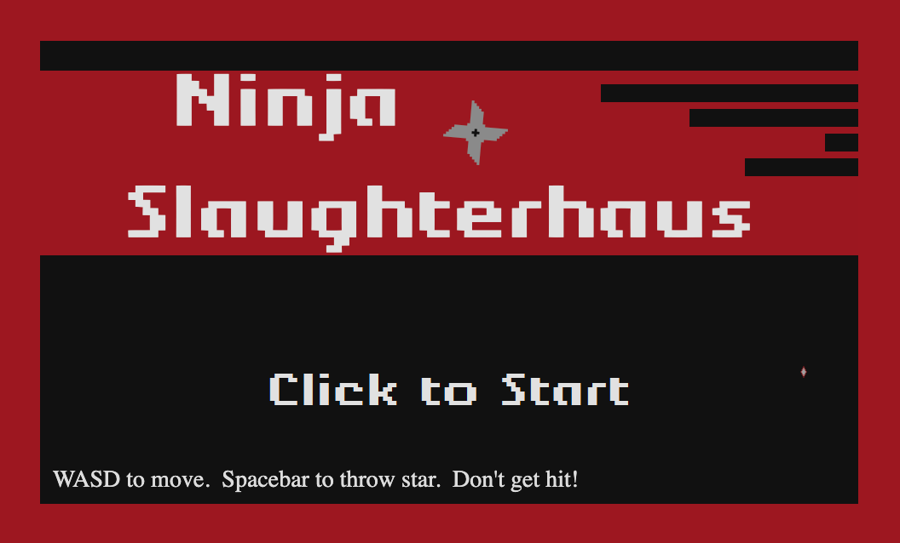
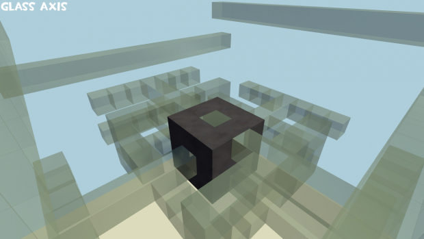

Drifter Coffee NZ
My partner and I run a coffee shop in Orewa and I have built the website for it. You can view it here.
ClassView
Collaborating with the Okemos software company TechSmith, we created two Google Chrome applications for classroom management called ClassView.
The ClassView Teacher Dashboard was created to simplify the task of managing classrooms. Teachers have the ability to create, assign, and review work to students. Teachers are able to create classes, add students to classes, and create groups within each class. The teacher also has the ability to monitor how students are sharing their files by receiving notifications to address cheating and oversee collaboration.
The ClassView Student Dashboard provides a simple interface where students can complete their assignments. Students also have the ability to ask for help from their teacher, receive due date reminders, and collaborate with classmates through their dashboard.
These Google Chrome applications were written using JavaScript, HTML, CSS, use the Google Drive API, and AngularJS framework. As a project restraint from TechSmith, we did not use a database or any sort of back-end architecture for our applications. Instead, we manipulated properties and attributes on files to achieve certain features.
You can view the project page here.
listen local
Where did your favorite band get their start? listen local allows users to pick a city and automatically creates a playlist the most popular songs by the city's top artists. Created at HackIllinois (a 36-hour hackathon hosted by the University of Illinois Urbana-Champaign), listen local uses Rdio and the Echo Nest APIs to find and play music from a location. Winner of the Neustar "Coolest Hack" award.
You can view listen local on DevPost here.
Dunebear Games
Throughout the years I have participated in weekend game jams building small games and experiments with JavaScript with friends.
Ninja Slaughterhaus is an endless arcade scroller where you play as a ninja and fight frogs who are invading the city.
Temperature - Our entry for the experimental game project with the theme of "Temperature". The objective of the game is to catch and avoid the hot and cold orbs to adjust the temperature on the thermastat. If the current temperature and the goal temperature are too different, the mercury in the thermometer will drop. Once all the mercury has dropped, the game will be over. Last as long as you can!
Destipix
Destipix was an Instagram photo aggregator based around professional sporting venues. Using the GPS location of major league sporting venues, Destipix let users get a live feed of fan photos from across the country. Built for a class in my Entrepreneurship specialization, using the Instagram API.
Glass Attack
A custom gamemode server plugin and set of maps made for Team Fortress 2. Glass Attack is an arena-style deathmatch where players are limited to only using rifles and melee weapons. Inspired by custom gamemodes in Counter-Strike and Call Of Duty, maps feature tons of breakable glass and death pits. Originally released in 2011, this gamemode is still being played online with new maps being created by a community of gamers.
You can watch some gameplay videos on YouTube here.